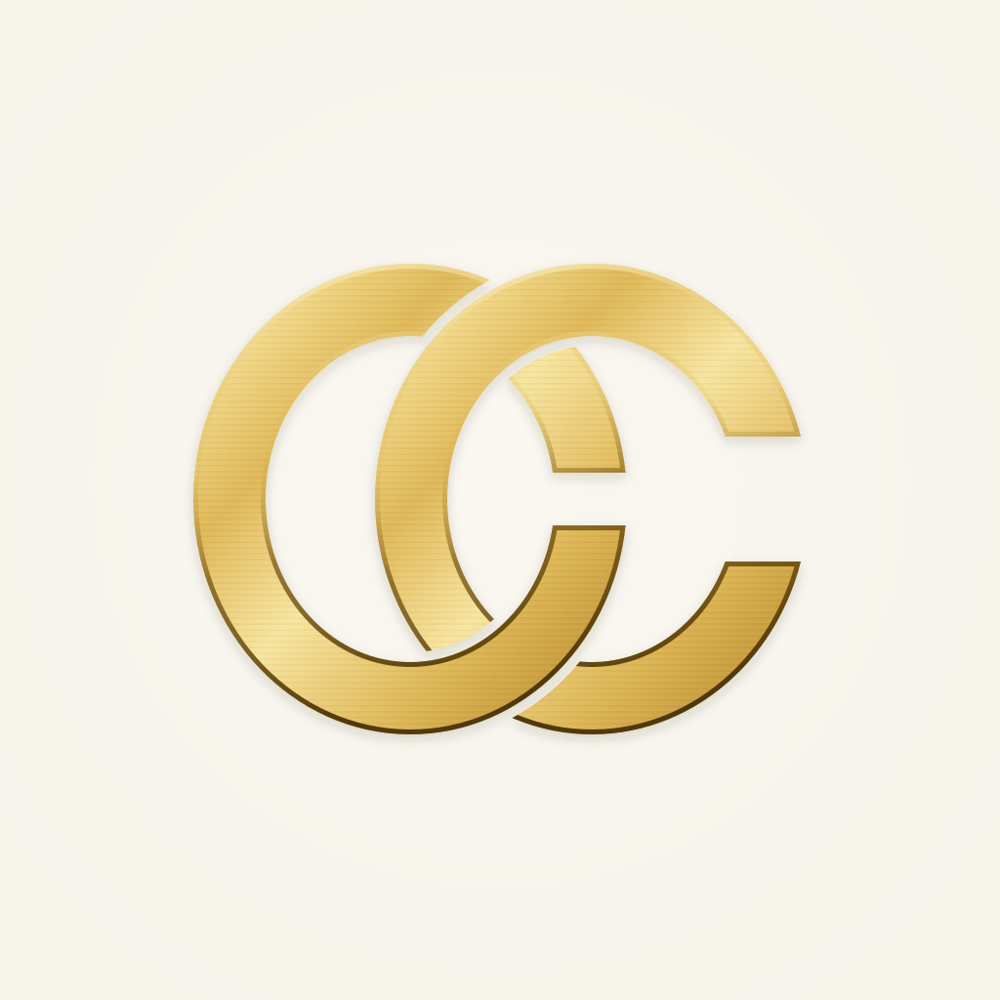

AI-Assisted Rapid Product Delivery
Turn concepts into working, tested, and deployed web applications, APIs, and internal tools rapidly—moving from idea to reliable customer-facing product without sacrificing code quality.
I'm Chesney Carolissen — Cloud Solutions Architect, DevOps Engineer, Full Stack Developer, and MBA. Through Carolissen Projects, we help businesses succeed by turning creative ideas into dependable, production-grade software.
“We build technology products that bridge the gap between ‘it works’ and what real people can actually rely on. Many of my projects start as personal hobbies designed to replace costly, subscription-based apps. With AI-assisted software engineering, I can quickly turn creative ideas into reality, and I’m confident the solutions I build can do the same for your business.”

Every product I ship is shaped by practical craftsmanship, business clarity, and a refusal to accept bloated, overpriced tooling.
Much like how my wife and I built TheResumeChef.com after battling fragile Microsoft Word formatting, drifting Canva layouts, and $29.99/month subscription paywalls just to download a PDF, my best work begins by solving real problems for real people.
Whether it’s a hospitality professional updating her CV between fast-paced contract roles, or a team needing tamper-resistant links and privacy-first analytics without enterprise bloat, I believe software should be intuitive, fast, and respectful of its users.
With a Masters in Business Administration (MBA) alongside hands-on experience across cloud infrastructure, DevOps, and full-stack development, I don’t just write code — I design systems aligned with cost control, security, and measurable business outcomes.
By combining modern AI-assisted software engineering with battle-tested infrastructure (Rust, TypeScript, Go, Python, Kubernetes, Docker/Podman, Traefik, and automated observability), I deliver production-ready products at startup speed.
Practical, high-leverage engineering for founders, growing teams, and organizations ready to ship without friction.
Turn concepts into working, tested, and deployed web applications, APIs, and internal tools rapidly—moving from idea to reliable customer-facing product without sacrificing code quality.
Multi-cloud infrastructure across AWS, Azure, and Google Cloud, containerized workloads with Docker/Podman & Kubernetes, HTTP/3 Traefik routing, and zero-downtime blue-green deployments.
Production readiness built in from day one: SSO integration, rate limiting, SSRF/bot protection, automated encrypted S3 backups, budget alerts, and VictoriaMetrics/Grafana monitoring.
Eliminate recurring per-seat SaaS bloat with lean, self-hosted or custom-built alternatives tailored to your exact workflow—giving your business full ownership and predictable costs.
A look at the live products I’ve designed, engineered, and launched—starting as personal hobbies and built to production standards.
A 100% free, recipe-driven resume studio powered by Rust (Axum) and React, built to replace fragile Word templates and greedy $29.99/month resume paywalls. Includes Cloud Pantry sync (Dropbox & Google Drive), PDF/DOCX extraction, a Tech Job Board, and an MCP AI Agent API.
A tamper-resistant, blockchain-anchored URL shortener (Base Mainnet EIP-191 attestations), customizable QR code studio (SVG/PNG/JPEG), and opt-in privacy-first link analytics platform built with TypeScript, Node.js, and SQLite.
The languages, cloud platforms, databases, observability stacks, and automation tools I work with across projects.


I keep hobby projects like TheResumeChef.com and getdaisylink.com free from sneaky monthly paywalls. If any of my tools or open-source work saved you time or helped you land an opportunity, you can fuel the next build with a coffee on Ko-fi!